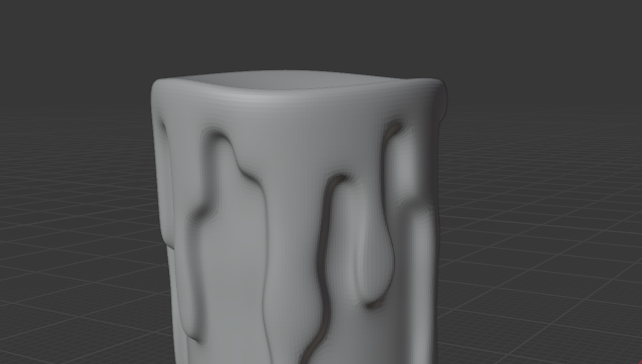
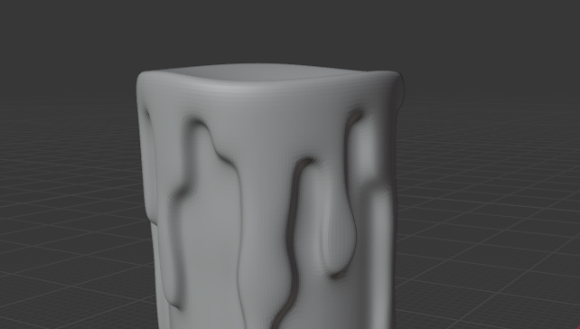
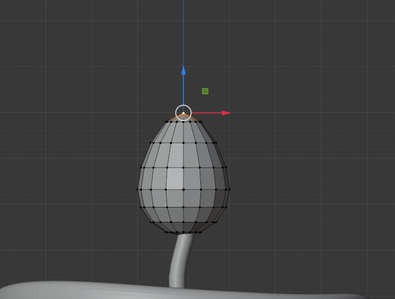
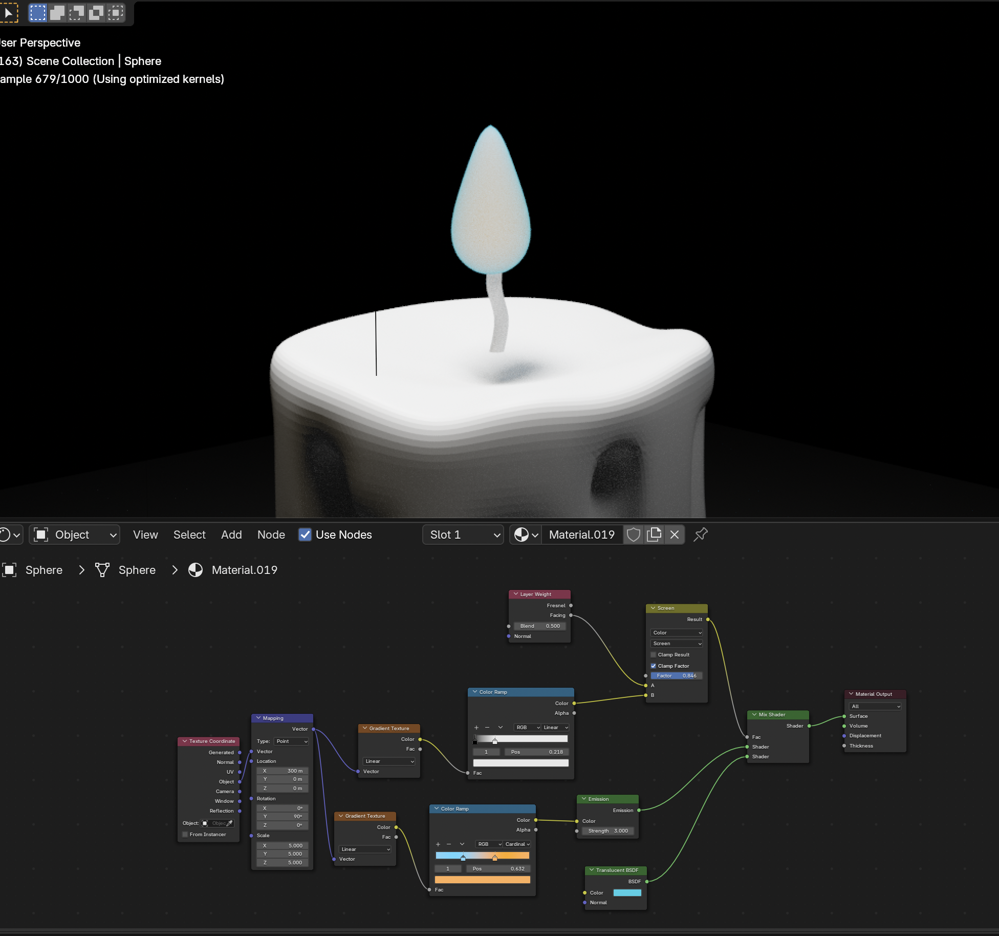

Possible-Plausible-Probable Cone Frame

When alive, money and fame are important, but what matters to the deceased? What is the best thing to pass on to one’s descendants? While material wealth may be significant in life, what remains for future generations after death is how much they were loved, how much dedication and effort were put into living a meaningful life. Before dying, one could create an artifact that embodies their will to live, something that the living can interact with to connect and resonate with. A new funeral system that connects the deceased and the living, allowing continuous expressions of love and inspiration.
The AI Candle and Digital Flower help maintain a positive connection between the living and those who have passed away by sharing their words of wisdom. When someone confides in the AI Candle during a difficult time, one of the surrounding flowers begins to glow. By scanning the glowing flower with their phone—similar to a QR code—they receive a message containing wisdom left behind by someone who has passed. In the face of death, life’s small worries often seem insignificant. What may feel overwhelming to the living could be eased by the wisdom of those who have already reached the end.
First, I created a cylinder and subdivided the faces into smaller sections. Then, I used Extrude to shape the melted wax. To make it look smoother and more rounded, I applied Subdivision and Shade Smooth. When designing the curves on the top part of the candle, I used Proportional Editing Mode so that instead of moving just one face, the surrounding faces moved along with it, creating a more natural and seamless look.
 

I also used Proportional Editing Mode to shape the candlelight. Following a YouTube tutorial, I created the effect of the flame glowing. I used Color Ramp for the gradient and Translucent to make the edges appear bright and glowing. Additionally, I added Emission to enhance the effect.
 